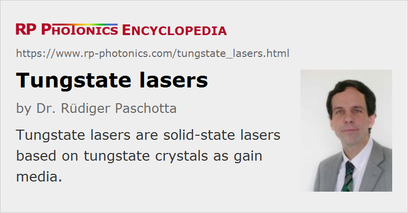

Tungstate Lasers
Definition: solid-state lasers based on tungstate crystals as gain media
More general term: solid-state lasers
German: Wolframat-Laser
Categories: optical materials, lasers
How to cite the article; suggest additional literature
Author: Dr. Rüdiger Paschotta
Before the development of Nd:YAG, Nd3+:CaWO4 was a very important rare-earth-doped laser gain medium. It was in fact used in the first continuously operating crystal laser. However, once Nd3+:YAG became commercially available, the interest in CaWO4 dropped sharply. In later years, certain other tungstate crystals started to attract a lot of attention.
Tungstate Crystal Materials
Monoclinic Double Tungstates
Various ytterbium-doped monoclinic double tungstates Yb3+:KGd(WO4)2 (Yb:KGW, potassium gadolinium tungstate) and Yb3+:KY(WO4)2 (Yb:KYW, potassium yttrium tungstate) have become particularly popular for making solid-state lasers, e.g. as tunable lasers or femtosecond lasers. Also under consideration is Yb3+:KLu(WO4)2 (Yb:KLuW, also called Yb:KLW). Other rare earth dopants such as neodymium (Nd3+), erbium (Er3+), thulium (Tm3+), and praseodymium (Pr3+) can also be used in tungstates.
Tetragonal Double Tungstates
Another interesting group of crystals is that of tetragonal double tungstates such as Yb3+:NaGd(WO4)2 (Yb:NGW) [7] and Yb3+:NaY(WO4)2 (Yb:NYW). Unlike their monoclinic cousins, the tetragonal tungstates are disordered crystal materials, where e.g. the Na+ and Gd3+ ions are randomly distributed on the same type of lattice sites. As the dopant ions (e.g. Yb3+) replace the other rare earth ions (e.g. Gd3+), this disordered structure results in inhomogeneous broadening and thus to a broader gain bandwidth. Some of these crystals can be grown with good quality only when using sophisticated (and often slow) growth methods, whereas others (e.g. the two mentioned above) are suitable for the common Czochralski method.
Properties of Rare-earth-doped Tungstates
Rare-earth-doped tungstate crystals have a number of special properties:
- The gain bandwidth e.g. of Yb:KGW and Yb:KYW is very large compared with that of Yb:YAG. This allows for wide wavelength tunability and for much shorter pulse durations from mode-locked lasers. Values well below 100 fs have been achieved with passive mode locking.
- Compared with other ytterbium-doped gain media (crystals or glasses) with similarly large gain bandwidth, ytterbium-doped tungstates have fairly high emission cross sections. This is essential for passive mode locking, since it helps to avoid Q-switching instabilities.
- While ytterbium-doped gain media generally exhibit a small quantum defect, ytterbium-doped tungstates allow for particularly small values. For example, a 1030-nm Yb:YAG laser would normally be pumped around 940 nm, whereas Yb:KGW or Yb:KYW could be most efficiently pumped around 981 nm. At the same time, a shorter laser wavelength can be obtained; it is possible to operate with a quantum defect well below 1%. As a consequence, the heat generation can be so small that this partly compensates the lower thermal conductivity.
- For tungstates, the ytterbium doping concentration can be very high without significant quenching, because the replaced ions have a very similar ion radius, and the inter-ion distance is relatively large. An example of this is Yb:KYW, which actually becomes KYbW = Yb:KYb(WO4)2 for 100% ytterbium doping. It is not clear, however, whether such high doping levels can be utilized in lasers.
- The thermal conductivity of common double tungstates is of the order to 3–4 W/(K m) – which is not bad compared with other laser crystals (although several times less than for YAG), and fairly large compared with the thermal conductivity of typical glasses. The comparison with glasses is appropriate since the large gain bandwidth allows e.g. tungstate femtosecond lasers and tunable lasers to compete with glass lasers.
- The monoclinic crystal structures results in a natural birefringence, helping to avoid thermally induced polarization rotation and depolarization loss.
- Tungstates tend to have high Raman coefficients. Therefore, they can generate significant Raman gain at moderate optical intensities. It is possible to use the laser crystal itself as a Raman converter.
For some applications, tungstates offer a combination of various useful properties. In particular for passive mode locking, ytterbium-doped double tungstates are often superior to other media in terms of the combination of high gain bandwidth, large cross sections, and relatively good thermal properties – even though in each particular discipline better materials could be found. Even for continuous-wave high-power thin-disk lasers, tungstates offer advantages over Yb:YAG in terms of efficiency, although the fabrication of thin disks from such materials is not easy (Yb:YAG is certainly easier to handle). A passively mode-locked thin-disk Yb:KYW laser [4] has probably generated the highest output power in sub-300-fs pulses which has been achieved with a bulk laser with no amplifier.
Suppliers
The RP Photonics Buyer's Guide contains 4 suppliers for tungstate lasers. Among them:
Questions and Comments from Users
Here you can submit questions and comments. As far as they get accepted by the author, they will appear above this paragraph together with the author’s answer. The author will decide on acceptance based on certain criteria. Essentially, the issue must be of sufficiently broad interest.
Please do not enter personal data here; we would otherwise delete it soon. (See also our privacy declaration.) If you wish to receive personal feedback or consultancy from the author, please contact him e.g. via e-mail.
By submitting the information, you give your consent to the potential publication of your inputs on our website according to our rules. (If you later retract your consent, we will delete those inputs.) As your inputs are first reviewed by the author, they may be published with some delay.
Bibliography
| [1] | F. Brunner et al., “Diode-pumped femtosecond Yb:KGd(WO4)2 laser with 1.1-W average power”, Opt. Lett. 25 (15), 1119 (2000), doi:10.1364/OL.25.001119 |
| [2] | H. Liu et al., “Diode-pumped Kerr-lens mode-locked Yb:KY(WO4)2 laser”, Opt. Lett. 26 (21), 1723 (2001), doi:10.1364/OL.26.001723 |
| [3] | P. Klopp et al., “Passively mode-locked Yb:KYW laser pumped by a tapered diode laser”, Opt. Express 10 (2), 108 (2002), doi:10.1364/OE.10.000108 |
| [4] | F. Brunner et al., “240-fs pulses with 22-W average power from a passively mode-locked thin-disk Yb:KY(WO4)2 laser”, Opt. Lett. 27 (13), 1162 (2002), doi:10.1364/OL.27.001162 |
| [5] | M. Rico et al., “Tunable laser operation of ytterbium in disordered single crystals of Yb:NaGd(WO4)2”, Opt. Express 12 (22), 5362 (2004), doi:10.1364/OPEX.12.005362 |
| [6] | S. Biswal et al., “Thermo-optical parameters measured in ytterbium-doped potassium gadolinium tungstate”, Appl. Opt. 44 (15), 3093 (2005), doi:10.1364/AO.44.003093 |
| [7] | C. Cascales et al., “Structural, spectroscopic, and tunable laser properties of Yb3+-doped NaGd(WO4)2”, Phys. Rev. B 74 (17), 174114 (2006), doi:10.1103/PhysRevB.74.174114 |
| [8] | J. Liu et al., “Efficient high-power laser operation of Yb:KLu(WO4)2 crystals cut along the principal optical axes”, Opt. Lett. 32 (14), 2016 (2007), doi:10.1364/OL.32.002016 |
| [9] | V. Petrov et al., “Growth and properties of KLu(WO4)2, and novel ytterbium and thulium lasers based on this monoclinic crystalline host”, Laser & Photon. Rev. 1, 179 (2007), doi:10.1002/lpor.200710010 |
| [10] | S. Rivier et al., “Thin-disk Yb:KLu(WO4)2 laser with single-pass pumping”, Opt. Lett. 33 (7), 735 (2008), doi:10.1364/OL.33.000735 |
| [11] | R. Peters et al., “Power scaling potential of Yb:NGW in thin disk laser configuration”, Appl. Phys. B 91, 25 (2008), doi:10.1007/s00340-008-2962-1 |
|  |
If you like this page, please share the link with your friends and colleagues, e.g. via social media:
These sharing buttons are implemented in a privacy-friendly way!